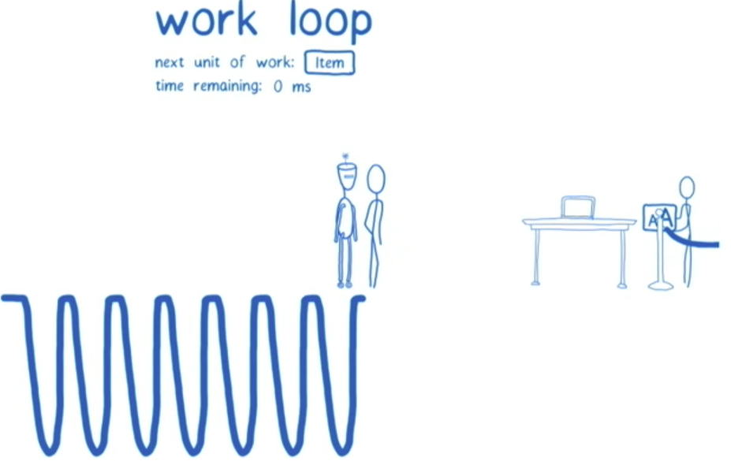

Dan在OverReact上发表的文章深入浅出，本文只针对个人之前不理解的点进行思考，采用了他的案例，参考了他的文章——将 React 作为 UI 运行时。
再写UI运行时的时候,发现一切都离不开Fiber,这里参考了掘金博主武器大师1024的一篇文章,并补充了一些他的案例React Fiber,同时,此案例也是Lin Clark presentation in ReactConf 2017演讲上的一篇案例。
大多数人关注React，关注它的使用方法，关注它创建页面的逻辑和效果，而忽略其模型和React本质上的一些东西，到底React帮我们做了什么?
宿主树和宿主实例
什么是宿主树，什么是宿主实例？
这是一个概念上的问题，区别两者，其实很简单，就像整体和局部的关系。例如一个Dom树，就是一个宿主树，Dom树中的一个div，就是一个宿主实例。
宿主实例有自己的属性和方法，我们可以操作宿主方法做一些想做的事情，例如appendChild，setAttribute等等
React又是怎么利用宿主树和宿主实例的呢？
在我看来，React的宿主树，是由其宿主实例构成的，而React的宿主实例，就是React元素，React元素是一个对象，与DOM树横向比对，大同小异，所以React再做UI渲染时，可以轻松的将其映射为对应的DOM元素，React经常帮我们做的，就是这个。
React解放了我们直接操作宿主树和宿主实例，因为React帮我们做了这个事情。做这些事情的同时，React又保证了另外两个事情:
- 稳定性: 宿主树的稳定性
- 通用性：宿主树中的宿主实例单独抽出来，依旧不会改变其UI结构，达到可复用的状态
React操作宿主树和DOM有什么不同？
- DOM会导致突变，直接操作宿主实例。在之后往里面增加或者删除子节点。宿主实例是完全可变的。
- React是通过克隆双亲树并始终替换掉顶级子树的宿主环境。
React的宿主实例——React元素
- React的元素不是永远存在的，他总是在重建和删除之间循环
- 你不能直接操作React元素(与DOM不同)，如果想改变，从头开始渲染
React渲染
ReactDOM.render
初次调用
看以下一段代码
1 | ReactDOM.render( |
- 初始调用时，实际操作就是把你的宿主树转换成实际的dom树渲染
1 | // 在 ReactDOM 渲染器内部（简化版） |
再次调用会如何做
- 想必看过React文档的都知道，会进行比对，只对需要更新的一部分进行更新，下面贴了Dan文章里的两段代码，简述了React的过程。但实际比对算法要复杂的多
1 | ReactDOM.render( |
- React工作流程大致如下
1 | // let domNode = document.createElement('button'); |
这里有个小注意点需要注意一下，当遇到条件语句时，React并不会重新创建元素，这依赖于元素的顺序，例如：这里的input始终在第二个
1 | function Form({ showMessage }) { |
由上面的小注意点引申出，当遇到列表时，React会去比对元素，如果元素相同，那么直接复用。问题是，当我们遇到类似于商品列表时，商品列表往往各项都不相同，或者说一个列表中有几项相同，那么React该怎么办，如果还是按照顺序来，那每个元素都将被更新。
这样导致的问题是，每个元素更新，消耗性能。同时，React会把类似于input这样的组件当时的值一并复用过来，导致潜在的bug。
1 | function ShoppingList({ list }) { |
React将会以以下的形式更新：
1 | for (let i = 0; i < 10; i++) { |
- 因此我们需要一个唯一标识key，来告诉React渲染前后元素是否是相同的。
组件和元素大同小异，React也会递归组件，渲染想要的元素。组件首字母必须大写，为了让React区分，告诉它这是一个组件而不是一个dom元素
补充两个小点
什么是Hooks？
- 其实Hooks是绑定组件局部状态的特性。
什么是局部状态
- 局部状态是宿主实例相关的能拥有的状态，例如focus、selection等等。
控制反转
组件是函数，为什么不用函数调用，而用JSX的形式呢？
- 我们自身调用函数，控制权在我们手里，用JSX的形式，React会为我们调用函数，这就是控制反转。使用控制反转有以下几个好处：
- 组件 > 函数 React组件帮助我们维护了局部状态
- 组件参与协调 也就是说React调用组件，可以更了解宿主树的结构，便于进行比对
- 组件推迟协调 不会引起渲染导致的主线程阻塞
- 组件便于调试 React提供了丰富的组件调试工具
- 组件可以懒加载 组件不会去执行不需要执行的东西，例如
1
2
3
4
5
6
7
8
9
10
11
12
13
14
15
16
17
18
19
20function Page({ currentUser, children }) {
if (!currentUser.isLoggedIn) {
return <h1>Please login</h1>;
}
return (
<Layout>
{children}
</Layout>
);
}
// 这里有个地方调用组件
<Page>
{Comments()} // 这个Comments函数无论是否登录永远都将执行
</Page>
// 这里有个地方调用组件
<Page>
<Comments /> // 这个Comments组件
</Page>
渲染阶段(React Fiber)和提交阶段
1 | class ClickCounter extends React.Component { |
React Fiber
什么是Fiber？为什么使用Fiber？看以下的图:
React 16版本之前，React完全通过stack reconciler进行比对(见图1)，这种比对会在setState进行后立即发生，会递归函数，当vDom遍历完成之后，得到对应的真实Dom的信息，并传递给render进行渲染。如果有大量的比对，那么会消耗过长的时间，浏览器线程此时被js代码所阻塞，如果遇到类似于动画效果，那么动画效果将被延迟执行，不仅如此，交互布局都将被阻塞，给用户的感觉就是卡顿的感觉。
上述图片展示了stack工作时的内存情况，因此，React重写了其算法，使用了Fiber。
Schedule(调度)
调度是什么？—— 调度就是调动，安排人力，车辆。(来自百度百科)
我们已经知道stack reconciler模式的弊端，比对占用大量时间，阻塞了主线程。因此，我们需要有人安排，何时能够进行比对。这种调度是Fiber reconciler中的过程之一，如果浏览器主线程的优先级高，那么我们优先进行浏览器想要进行的操作。类似于下图。
如上图所示，我们需要达成此目的，我们需要拆分我们的宿主树，拆分成一个个片段，以链表的形式，为每个节点添加一些必要的数据结构，来达成连续的片段。并且这些连续的片段可以被高优先级的任务随时中断。
这样引发一个问题，真实Dom与我当前的vDom不一致(由于我可能已经更新了一些片段)，因此，调度过程中，我们必须保存我们的调度信息，除了当前正在比对的树(current树)。我们还需要维护一棵正在比对的树，这棵树保存的是已经比对过的片段(workInProgress树)。
怎么和浏览器进行通信，何时和浏览器进行通信呢?
客户端执行任务按帧来计算，通常执行帧在30~60帧之间。在两个执行帧之间的空闲时间，通常被用来进行调度，执行任务。
如上图所示，浏览器可以在这两个空闲期之间执行requestIdleCallback，浏览器同时也会传递给回调函数deadline相关的对象信息，如果说你这个fiber node执行时间过长，这个fiber node依旧会执行完才会去向浏览器征求意见，如果说你这个里面写了个死循环，那么页面将会卡死，通常一个fiber node不会超过16ms，超过了则将出现卡顿的情况。
一个例子
这个例子借用React Conf 2017上Lin Clark的演讲(附上链接)
现在有一个列表，渲染一个button和一组item, item中包含一个div，其中的内容为数字。通过点击button，可以使列表中的所有数字进行平方。另外有一个按钮，点击可以调节字体大小。
1.0 页面初始化完成，渲染一个fiber tree，如下图所示
这里注意：每个fiber node，child指针指向的节点都为其直接子节点，至于其他子节点，将会由直接子节点的sibling指针指向，具体可见fiber数据结构，每个fiber node都向其父节点返回
1.0.1 React同时维护用于计算更新，保存当前计算状态的树，称之为workInProgressTree，。
1.1 用户点击平方操作，调用setState，React将其送入更新队列(update queue), 不会立即进行对比，修改dom，而是交给调度器(scheduler)
1.2 调度器会去询问主线程的使用情况，上文已经描述了如何与浏览器进行通信，借用requestIdelCallback，根据优先级执行任务，低优先级通过requestIdelCallback，高优先级(动画)通过requestAnimationFrame执行。
2.1 一旦调度器得到了时间，就开始进入了work loop，这种循环是等待与执行的循环，每次fiber node执行完成才会去询问浏览器主线程状态，上文说了，通常是在16ms之内完成，否则会有卡顿情况，如果写了死循环，依旧会导致页面卡死的情况。在这个过程中，当前的fiber node需要记住下一个工作单元，如果浏览器有时间，那么我将进行下一个fiber node的任务执行
2.2 根节点上的更新队列为空，所以直接从fiber-tree上将根节点复制到workInProgressTree中去。根节点中包含指向子节点List的指针。
2.3 根节点根据child指针，将List节点和对应的更新队列一起放到workInProgressTree中，List插入后返回给父节点，标志着根节点fiber node处理完成
2.4 重复1.2操作，询问主线程情况
3.1 处理下一个List节点，进入work loop，因此此时react会调用setState时传入的updater funciton获取最新的state值，此时应该是[1,4,9]
- 在继续之前，我们简单回顾一下
setState的前几步流程:- 触发
setState函数，将触发setState的this和setState的参数传入enqueueSetState函数中。 enqueueSetState函数，提出当前触发setState的Fiber节点并将传入的setState的参数创建一个update对象，update对象中的payload就是传入的state对象。enqueueUpdate函数，将当前Fiber的state和需要修改的state创建一个对象传入当前Fiber节点的updateQueue对象中。updateQueue对象有几个关键值，baseState(当前Fiber节点的state)、firstUpdate(首个更新任务)、lastUpdate(最后一个更新任务，防止多次重复setState)。
- 触发
在获取到最新的state值后，react会更新List的state和props值，并且根据element类型判断是否可重用，然后渲染到workInProgress树中，由于List组件有更新，因此我们需要将List打上标签，表明需要更新。
3.2 重复1.2操作，询问主线程情况
3.3 button没有子节点，也没有更新，因此直接标记button处理完成。
3.4 重复1.2操作，询问主线程情况。由于我们点击了放大字体的操作，主线程已经有放大字体的操作在等待fiber node任务完成。
3.5 对于每一个item,判断shouldComponentUpdate,如果不需要更新，那么我们像3.3中的button一样操作，如果需要更新，那么我们像3.1中的List一样操作，打需要更新的标签
4.1 对于叶子节点div，无兄弟节点，更新操作也已结束，需要合并到父节点，才算fiber node完成。
4.2 合并回到父节点，并移除标签，标记完成。
4.3 重复1.2操作，询问主线程情况。现在有放大字体的操作在等待。因此交换主线程，放大字体。

4.4 放大字体完成，React完成接下来的操作，形成一个完成的workInProgress树。
4.5 那些更新的item向List返回, 标签列表如下
4.6 所有节点标记完成后,React正式进入提交阶段,同样询问主线程,时间够用,更新Dom
4.7 更新完过后还需要交换指针
废除生命周期
- 为什么
Fiber Reconciler下,React要废除生命周期例如componentWillUpdate?
我们通过刚刚Fiber Reconciler的过程我们看到, 这个过程是可以被高优先级例如动画所打断的, 我们初次调用componentWillUpdate, 结果我Reconciler到一半,被打断了, 当主线程又有时间的时候,我又要进行componentWillUpdate,显然是不合理的.